<소개>
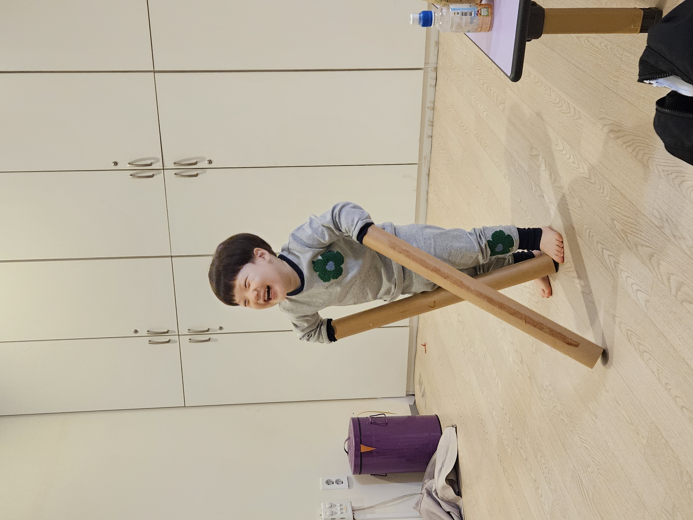
반갑습니다. 제 이름은 강동균입니다. 나이는 26살, 97년생입니다.
아래의 7문 7답으로 저를 더 자세히 알아보아요~😉😎
질문1. 취미가 뭐야?
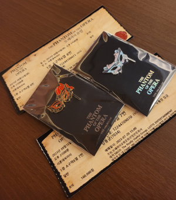 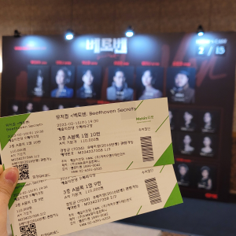 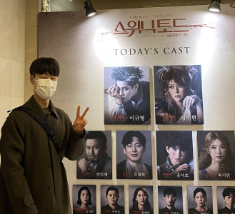 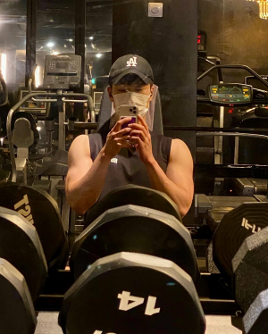 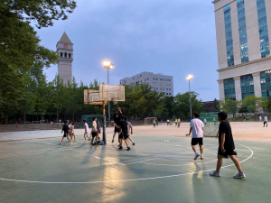
제 취미는 🎵뮤지컬 관람🎶, ⚽운동🏋️♂️입니다.
최근에는 전시회🖼️와 오케스트라 연주회🎻에도 관심이 생겼어요☺️
질문2. 관심 분야가 뭐야?
 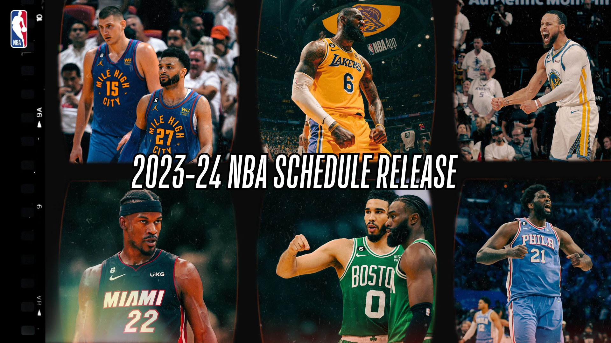
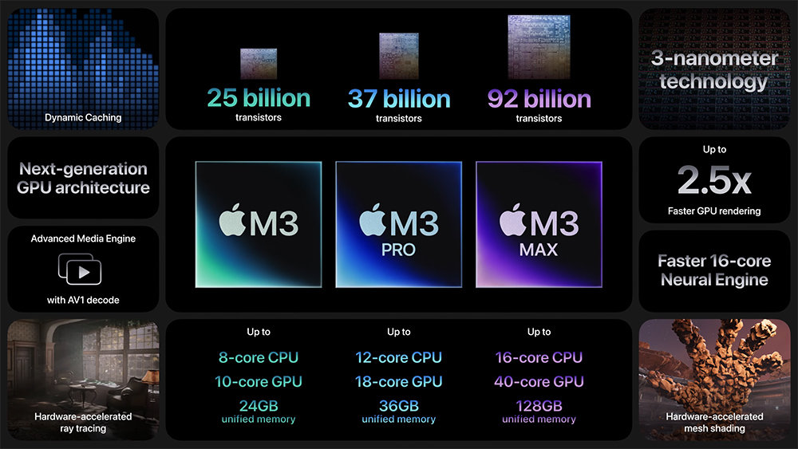
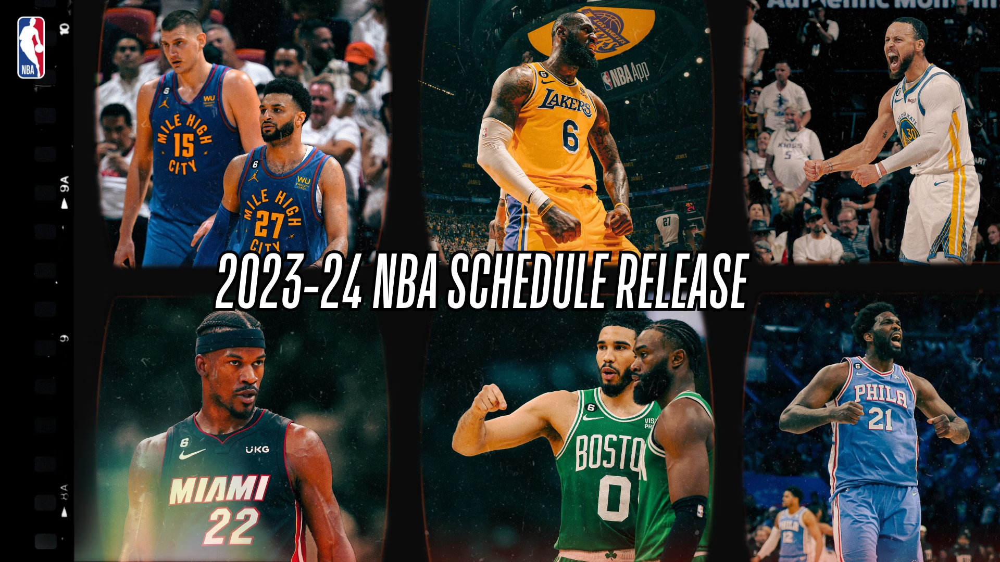
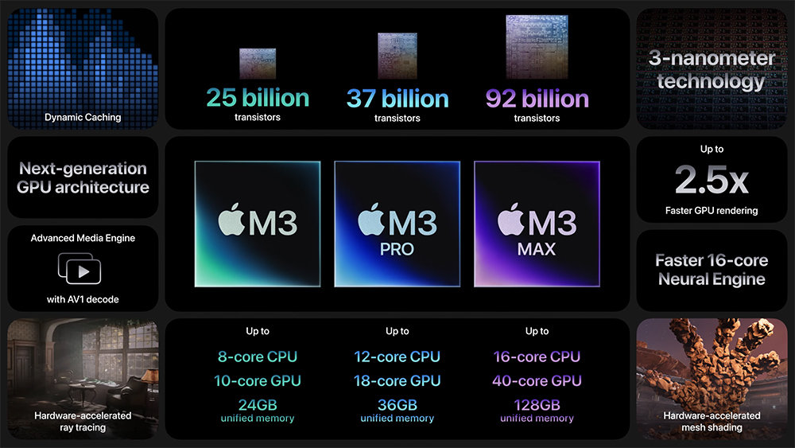
제 관심 분야는 교육📖,
스포츠👟,
IT🖥️입니다.
교육은 제 전공이기도 해서 관심이 많고, 스포츠랑 IT는 평소에도 관심이 많았어요!
스포츠 중에서는 해외 스포츠(축구⚽, 농구🏀, 야구⚾)를 좋아하고, IT에서는 하드웨어🖥️쪽에 관심이 있습니다.
질문3. 좋아하는 영화가 뭐야?
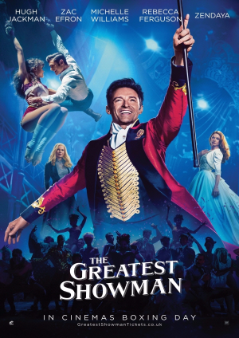 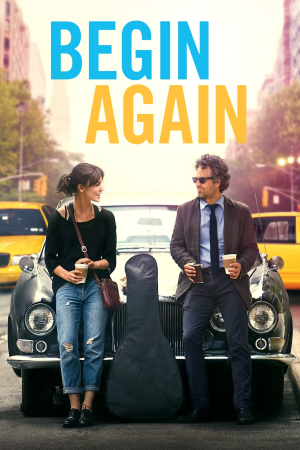저는 위대한 쇼맨, 비긴 어게인을 좋아합니다. 두 영화 모두 OST가 아주 좋습니다👍
질문4. 좋아하는 가수는 누구야?
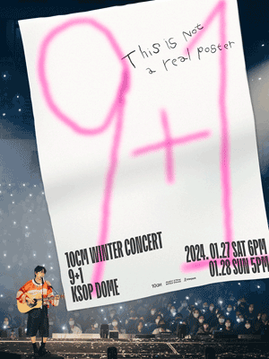 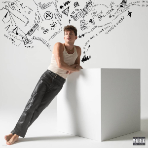저는 10cm(권정열), 찰리 푸스를 좋아합니다. 둘 다 작곡, 작사 능력이랑 음색이 너무 좋아요👍
저번달에 찰리 푸스 공연을 갈 기회가 있었는데, 개인 사정으로 못 간 건 좀 많이 아쉬워요🥲
질문5. 좋아하는 노래가 뭐야?
클릭하면 유튜브 링크로 연결됩니다. 한 번씩 들어보세요😉
질문6. MBTI가 뭐야?
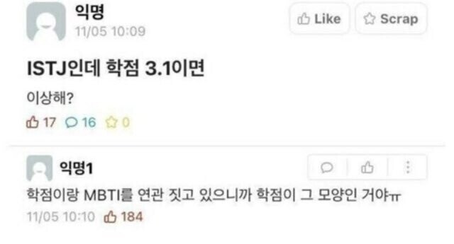 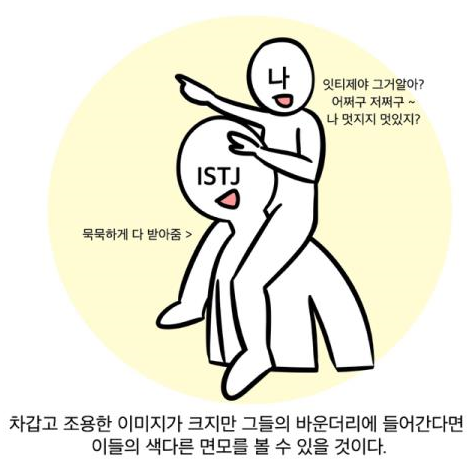 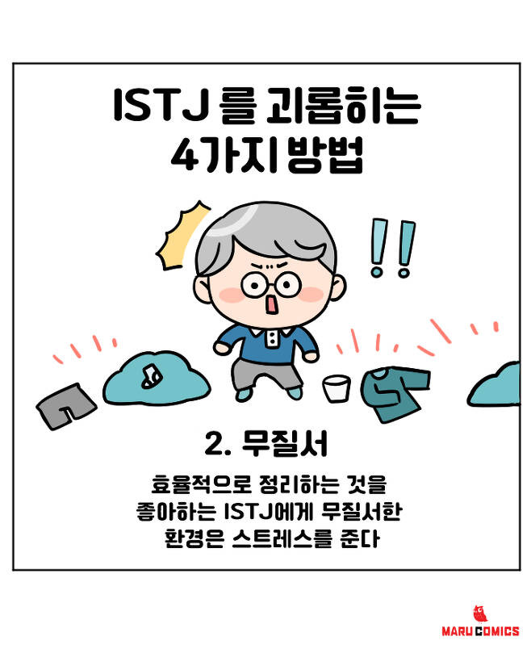할 때마다 조금씩 다른데, 가장 최근에 나온 MBTI는 ISTJ입니다. I, T, J는 반반이고, S랑 N은 7대3정도로 S가 많이 나와요.
저의 다른 MBTI로는 ISFJ, ISTJ가 있습니다. 아주 가끔 ESTJ`, ESFJ도 나오는데, 저는 확신의 I인 것 같아서 제외했어요😅
질문7. 가장 기억에 남는 여행지가 어디야?
 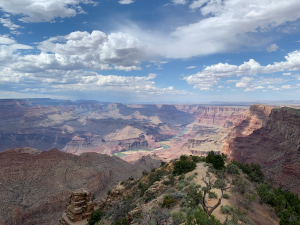
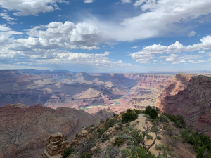
저는 미국의 라스베이거스🌆와 그랜드 캐니언⛰️이 가장 기억에 남아요.
라스베이거스의 화려함, 그랜드 캐니언의 압도적인 풍경과 자연의 아름다움은 평생 잊지 못할 것 같아요🙊
여러분도 살면서 꼭 위의 두 곳은 가보시길 강력히 추천드려요!!!🤗👻
 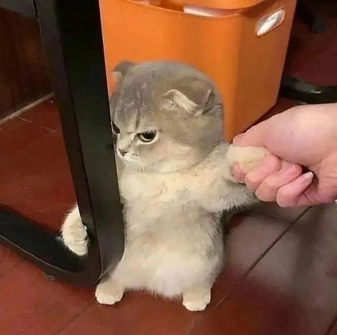
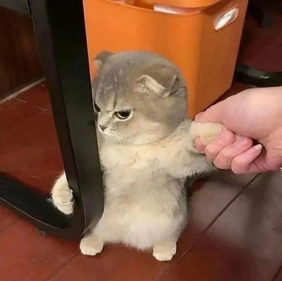
제가 고양이😸를 좋아해서 추가해 보았습니다...*^.^*